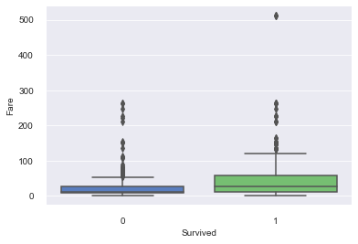
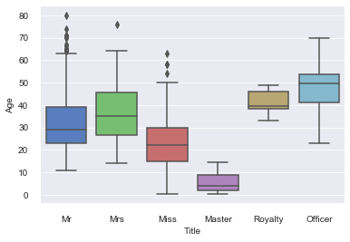
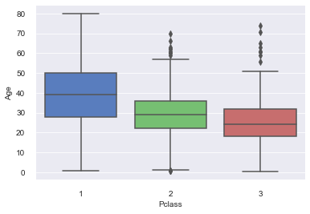
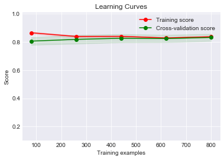
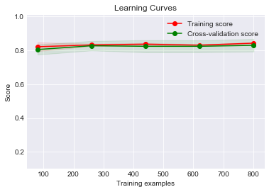
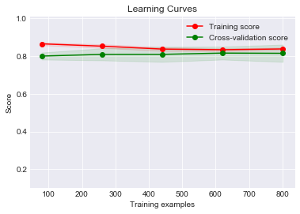

Titanic存活预测¶
目录
1. 概述¶
Titanic存活预测是Kaggle上的入门赛题。给定一些乘客的信息，及其最后是否存活的label，作为训练样本,预测其他乘客是否存活，是典型的二分类问题。
2. 数据分析¶
首先导入数据
In [332]:
import numpy as np
import pandas as pd
import warnings
import matplotlib
import matplotlib.pyplot as plt
warnings.filterwarnings('ignore')
%matplotlib inline
import seaborn as sns
In [270]:
train = pd.read_csv('train.csv')
test = pd.read_csv('test.csv')
all_data = pd.concat([train,test],keys = ['train','test'])
In [271]:
train.head()
Out[271]:
| PassengerId | Survived | Pclass | Name | Sex | Age | SibSp | Parch | Ticket | Fare | Cabin | Embarked | |
|---|---|---|---|---|---|---|---|---|---|---|---|---|
| 0 | 1 | 0 | 3 | Braund, Mr. Owen Harris | male | 22.0 | 1 | 0 | A/5 21171 | 7.2500 | NaN | S |
| 1 | 2 | 1 | 1 | Cumings, Mrs. John Bradley (Florence Briggs Th... | female | 38.0 | 1 | 0 | PC 17599 | 71.2833 | C85 | C |
| 2 | 3 | 1 | 3 | Heikkinen, Miss. Laina | female | 26.0 | 0 | 0 | STON/O2. 3101282 | 7.9250 | NaN | S |
| 3 | 4 | 1 | 1 | Futrelle, Mrs. Jacques Heath (Lily May Peel) | female | 35.0 | 1 | 0 | 113803 | 53.1000 | C123 | S |
| 4 | 5 | 0 | 3 | Allen, Mr. William Henry | male | 35.0 | 0 | 0 | 373450 | 8.0500 | NaN | S |
In [272]:
print(train.shape[0],test.shape[0]) #训练集891条，测试集418条
891 418
In [273]:
train['Survived'].mean() #平均存活率38.4%
Out[273]:
0.3838383838383838
Missing Data¶
年龄与舱位的数据缺失比较严重
In [274]:
total = all_data.drop(['Survived'],axis=1).isnull().sum().sort_values(ascending=False)
percent = (all_data.drop(['Survived'],axis=1).isnull().sum()/all_data.drop(['Survived'],axis=1).isnull().count()).sort_values(ascending=False)
Type = all_data.drop(['Survived'],axis=1).dtypes
pd.concat([total,percent,Type], axis=1, keys=['Total','Percent','Type'])
Out[274]:
| Total | Percent | Type | |
|---|---|---|---|
| Age | 263 | 0.200917 | float64 |
| Cabin | 1014 | 0.774637 | object |
| Embarked | 2 | 0.001528 | object |
| Fare | 1 | 0.000764 | float64 |
| Name | 0 | 0.000000 | object |
| Parch | 0 | 0.000000 | int64 |
| PassengerId | 0 | 0.000000 | int64 |
| Pclass | 0 | 0.000000 | int64 |
| Sex | 0 | 0.000000 | object |
| SibSp | 0 | 0.000000 | int64 |
| Ticket | 0 | 0.000000 | object |
Pclass¶
- 3等座人数最多，1等2等差不多
- 等级越高，存活率越高
In [275]:
survived = train[['Pclass','Survived']].groupby(['Pclass'],as_index=False).mean()
count = train[['Pclass','Survived']].groupby(['Pclass'],as_index=False).count()
count.columns = ['Pclass','count']
pd.merge(count,survived,how = 'left', on=['Pclass'])
Out[275]:
| Pclass | count | Survived | |
|---|---|---|---|
| 0 | 1 | 216 | 0.629630 |
| 1 | 2 | 184 | 0.472826 |
| 2 | 3 | 491 | 0.242363 |
Sex¶
女性生存几率大大高于男性
In [276]:
survived = train[['Sex','Survived']].groupby(['Sex'],as_index=False).mean()
count = train[['Sex','Survived']].groupby(['Sex'],as_index=False).count()
count.columns = ['Sex','count']
pd.merge(count,survived,how = 'left', on=['Sex'])
Out[276]:
| Sex | count | Survived | |
|---|---|---|---|
| 0 | female | 314 | 0.742038 |
| 1 | male | 577 | 0.188908 |
Embarked¶
登船口以S居多，C的存活率较其他两个稍微高一点
In [277]:
survived = train[['Embarked','Survived']].groupby(['Embarked'],as_index=False).mean()
count = train[['Embarked','Survived']].groupby(['Embarked'],as_index=False).count()
count.columns = ['Embarked','count']
pd.merge(count,survived,how ='left', on=['Embarked'])
Out[277]:
| Embarked | count | Survived | |
|---|---|---|---|
| 0 | C | 168 | 0.553571 |
| 1 | Q | 77 | 0.389610 |
| 2 | S | 644 | 0.336957 |
Age¶
从年龄上看，并没有太大的差别
In [278]:
import seaborn as sns
sns.set_style("darkgrid")
sns.boxplot(x="Survived", y="Age", data=train[['Age','Survived']], palette="muted")
sns.despine(offset=10, trim=True)
Fare¶
- 票价的范围比较大，最大的超过了500
- 幸存者票价会略高一些
In [279]:
import seaborn as sns
sns.set_style("darkgrid")
sns.boxplot(x="Survived", y="Fare", data=train[['Fare','Survived']], palette="muted")
sns.despine(offset=10, trim=True)

3. 数据清洗¶
首先处理缺失数据。对于乘客的年龄，考虑到其年龄可能会与其称谓头衔有关，故先从Name字段中提炼出头衔，并对一些少数的特殊称谓汇总。
In [280]:
all_data['Title'] = all_data.Name.str.extract(' ([A-Za-z]+)\.', expand=False)
Title_Dictionary = {
"Capt": "Officer",
"Col": "Officer",
"Major": "Officer",
"Jonkheer": "Royalty",
"Don": "Royalty",
"Sir" : "Royalty",
"Dr": "Officer",
"Rev": "Officer",
"Countess": "Royalty",
"Dona": "Royalty",
"Mme": "Mrs",
"Mlle": "Miss",
"Ms": "Mrs",
"Mr" : "Mr",
"Mrs" : "Mrs",
"Miss" : "Miss",
"Master" : "Master",
"Lady" : "Royalty"
}
all_data['Title'] = all_data.Title.map(Title_Dictionary)
Title¶
Mrs和Miss的存活率还是蛮高的，Mr就比较悲剧，这跟性别有很大关系
In [281]:
survived = all_data.ix[:train.shape[0],['Title','Survived']].groupby(['Title'], as_index = False).mean()
count = all_data.loc['train',['Title','Survived']].groupby(['Title'], as_index = False).count()
count.columns = ['Title','count']
pd.merge(count,survived,how ='left', on=['Title'])
Out[281]:
| Title | count | Survived | |
|---|---|---|---|
| 0 | Master | 40 | 0.575000 |
| 1 | Miss | 184 | 0.701087 |
| 2 | Mr | 517 | 0.156673 |
| 3 | Mrs | 127 | 0.795276 |
| 4 | Officer | 18 | 0.277778 |
| 5 | Royalty | 5 | 0.600000 |
- 不同Title的平均年龄还是有较大区别的
In [282]:
import seaborn as sns
sns.set_style("darkgrid")
sns.boxplot(x="Title", y="Age", data=all_data[['Title','Age']], palette="muted")
sns.despine(offset=10, trim=True)

- 不同等级仓位的平均年龄也有一定区别
In [283]:
import seaborn as sns
sns.set_style("darkgrid")
sns.boxplot(x="Pclass", y="Age", data=all_data[['Pclass','Age']], palette="muted")
sns.despine(offset=10, trim=True)

基于以上两个属性，对缺失的年龄进行分组填充
In [284]:
age_df=all_data.loc[:,['Title','Pclass','Age']].groupby(['Pclass','Title'],as_index=False).mean()
age_df['Age'] = round(age_df['Age'])
age_df.rename(columns={'Age':'Age_p'},inplace = True)
all_data = pd.merge(all_data, age_df, how='left', on=['Title', 'Pclass'])
all_data['Age'].where(all_data['Age'].notnull(),all_data['Age_p'],inplace = True)
all_data.drop(['Age_p'],axis = 1,inplace = True)
Cabin¶
cabin因为缺失值过多，所以令缺失值为0，反之为1
In [285]:
all_data['Cabin'].loc[all_data['Cabin'].isnull()]=0
all_data['Cabin'].loc[all_data['Cabin']!=0]=1
all_data['Cabin']=all_data['Cabin'].astype(int)
Embarked和Fare的缺失值都分别填上众数和平均数
In [286]:
freq_port = all_data.Embarked.dropna().mode()[0]
all_data['Embarked'] = all_data['Embarked'].fillna(freq_port)
all_data['Fare'].fillna(all_data['Fare'].mean(),inplace = True)
再次检查缺失值
In [287]:
total = all_data.drop(['Survived'],axis=1).isnull().sum().sort_values(ascending=False)
percent = (all_data.drop(['Survived'],axis=1).isnull().sum()/all_data.drop(['Survived'],axis=1).isnull().count()).sort_values(ascending=False)
Type = all_data.drop(['Survived'],axis=1).dtypes
pd.concat([total,percent,Type], axis=1, keys=['Total','Percent','Type'])
Out[287]:
| Total | Percent | Type | |
|---|---|---|---|
| Age | 0 | 0.0 | float64 |
| Cabin | 0 | 0.0 | int64 |
| Embarked | 0 | 0.0 | object |
| Fare | 0 | 0.0 | float64 |
| Name | 0 | 0.0 | object |
| Parch | 0 | 0.0 | int64 |
| PassengerId | 0 | 0.0 | int64 |
| Pclass | 0 | 0.0 | int64 |
| Sex | 0 | 0.0 | object |
| SibSp | 0 | 0.0 | int64 |
| Ticket | 0 | 0.0 | object |
| Title | 0 | 0.0 | object |
FamilySize¶
增加家庭成员人数字段
In [288]:
all_data['FamilySize'] = all_data['SibSp'] + all_data['Parch'] + 1
删掉不用的字段
In [289]:
all_data.drop(['PassengerId','Name','SibSp','Parch','Ticket'],axis = 1,inplace = True)
In [290]:
all_data.dtypes
Out[290]:
Age float64
Cabin int64
Embarked object
Fare float64
Pclass int64
Sex object
Survived float64
Title object
FamilySize int64
dtype: object
对数据进行必要的处理，为喂入模型做准备
In [291]:
all_data['Sex'].loc[all_data['Sex']=='male']=0
all_data['Sex'].loc[all_data['Sex']=='female']=1
all_data['Sex'] = all_data['Sex'].astype(int)
In [292]:
df_x=all_data.drop(['Survived'],axis = 1)
In [293]:
df_x=pd.get_dummies(df_x)
In [294]:
from scipy import stats
df_x[['Age','Fare']].apply(lambda x: stats.skew(x))
Out[294]:
Age 0.452129
Fare 4.364366
dtype: float64
Fare偏度过大，将其取对数
In [295]:
df_x['Fare'] = np.log1p(df_x['Fare'])
将所有数据标准化
In [298]:
from sklearn.preprocessing import MinMaxScaler
df_x=pd.DataFrame(MinMaxScaler().fit_transform(df_x),columns=df_x.columns)
In [301]:
df_x.describe()
Out[301]:
| Age | Cabin | Fare | Pclass | Sex | FamilySize | Embarked_C | Embarked_Q | Embarked_S | Title_Master | Title_Miss | Title_Mr | Title_Mrs | Title_Officer | Title_Royalty | |
|---|---|---|---|---|---|---|---|---|---|---|---|---|---|---|---|
| count | 1309.000000 | 1309.000000 | 1309.000000 | 1309.000000 | 1309.000000 | 1309.000000 | 1309.000000 | 1309.000000 | 1309.000000 | 1309.000000 | 1309.000000 | 1309.000000 | 1309.000000 | 1309.000000 | 1309.000000 |
| mean | 0.366910 | 0.225363 | 0.477467 | 0.647441 | 0.355997 | 0.088388 | 0.206264 | 0.093965 | 0.699771 | 0.046600 | 0.200153 | 0.578304 | 0.152788 | 0.017571 | 0.004584 |
| std | 0.168089 | 0.417981 | 0.155173 | 0.418918 | 0.478997 | 0.158364 | 0.404777 | 0.291891 | 0.458533 | 0.210862 | 0.400267 | 0.494019 | 0.359921 | 0.131435 | 0.067573 |
| min | 0.000000 | 0.000000 | 0.000000 | 0.000000 | 0.000000 | 0.000000 | 0.000000 | 0.000000 | 0.000000 | 0.000000 | 0.000000 | 0.000000 | 0.000000 | 0.000000 | 0.000000 |
| 25% | 0.260929 | 0.000000 | 0.350202 | 0.500000 | 0.000000 | 0.000000 | 0.000000 | 0.000000 | 0.000000 | 0.000000 | 0.000000 | 0.000000 | 0.000000 | 0.000000 | 0.000000 |
| 50% | 0.348616 | 0.000000 | 0.438698 | 1.000000 | 0.000000 | 0.000000 | 0.000000 | 0.000000 | 1.000000 | 0.000000 | 0.000000 | 1.000000 | 0.000000 | 0.000000 | 0.000000 |
| 75% | 0.455092 | 0.000000 | 0.556696 | 1.000000 | 1.000000 | 0.100000 | 0.000000 | 0.000000 | 1.000000 | 0.000000 | 0.000000 | 1.000000 | 0.000000 | 0.000000 | 0.000000 |
| max | 1.000000 | 1.000000 | 1.000000 | 1.000000 | 1.000000 | 1.000000 | 1.000000 | 1.000000 | 1.000000 | 1.000000 | 1.000000 | 1.000000 | 1.000000 | 1.000000 | 1.000000 |
数据切分
In [306]:
x_train = df_x[:train.shape[0]]
x_test = df_x[train.shape[0]:]
y_train = train['Survived']
4. baseline建模及评估¶
本次准备尝试LR,SVM,KNN,RF,Xgboost
In [334]:
from sklearn.model_selection import learning_curve
def plot_learning_curve(estimator, title, X, y, ylim=None, cv=None,
n_jobs=1, train_sizes=np.linspace(.1, 1.0, 5)):
plt.figure()
plt.title(title)
if ylim is not None:
plt.ylim(*ylim)
plt.xlabel("Training examples")
plt.ylabel("Score")
train_sizes, train_scores, test_scores = learning_curve(
estimator, X, y, cv=cv, n_jobs=n_jobs, train_sizes=train_sizes)
train_scores_mean = np.mean(train_scores, axis=1)
train_scores_std = np.std(train_scores, axis=1)
test_scores_mean = np.mean(test_scores, axis=1)
test_scores_std = np.std(test_scores, axis=1)
plt.grid(True)
plt.fill_between(train_sizes, train_scores_mean - train_scores_std,
train_scores_mean + train_scores_std, alpha=0.1,
color="r")
plt.fill_between(train_sizes, test_scores_mean - test_scores_std,
test_scores_mean + test_scores_std, alpha=0.1, color="g")
plt.plot(train_sizes, train_scores_mean, 'o-', color="r",
label="Training score")
plt.plot(train_sizes, test_scores_mean, 'o-', color="g",
label="Cross-validation score")
plt.legend(loc="best")
return plt
In [329]:
from sklearn.model_selection import StratifiedKFold
from sklearn.metrics import accuracy_score
import time
def kfold_plot(train, ytrain, model):
kf = StratifiedKFold(n_splits=5)
accuracy_scores = []
exe_time = []
i=0
for train_index, test_index in kf.split(train, ytrain):
X_train, X_test = train.iloc[train_index], train.iloc[test_index]
y_train, y_test = ytrain.iloc[train_index], ytrain.iloc[test_index]
begin_t = time.time()
predictions,model_o = model(X_train, X_test, y_train)
end_t = time.time()
exe_time.append(round(end_t-begin_t, 3))
accuracy_scores.append(accuracy_score(y_test.astype(float), predictions))
i += 1
print ('mean accuracy_scores: ', np.mean(accuracy_scores))
print ('mean model process time: ', np.mean(exe_time), 's')
plot_learning_curve(model_o, "Learning Curves",train, ytrain, ylim=(0.1, 1.01), n_jobs=1,cv=10)
plt.show()
return np.mean(accuracy_scores),np.mean(exe_time)
In [327]:
mean_accuracy = {}
mean_time = {}
Logistic Regression¶
In [360]:
from sklearn.linear_model import LogisticRegression
def lr_model(X_train, X_test, y_train):
model = LogisticRegression(C=100)
model.fit(X_train, y_train)
predictions = model.predict(X_test)
return predictions,model
mean_accuracy['lr'],mean_time['lr'] = kfold_plot(x_train, y_train, lr_model)
mean accuracy_scores: 0.827184216396
mean model process time: 0.0036 s

SVM¶
In [362]:
from sklearn.svm import SVC
def svc_model(X_train, X_test, y_train):
model = SVC(C=20)
model.fit(X_train, y_train)
predictions = model.predict(X_test)
return predictions,model
mean_accuracy['svc'],mean_time['svc'] = kfold_plot(x_train, y_train, svc_model)
mean accuracy_scores: 0.823832261089
mean model process time: 0.0232 s

KNN¶
In [363]:
from sklearn.neighbors import KNeighborsClassifier
def knn_model(X_train, X_test, y_train):
model = SVC(C=20)
model.fit(X_train, y_train)
predictions = model.predict(X_test)
return predictions,model
mean_accuracy['knn'],mean_time['knn'] = kfold_plot(x_train, y_train, knn_model)
mean accuracy_scores: 0.823832261089
mean model process time: 0.0166 s
Random Forest¶
In [402]:
from sklearn.ensemble import RandomForestClassifier
def rf_model(X_train, X_test, y_train):
model = RandomForestClassifier(max_depth = 8,min_samples_leaf = 5,min_samples_split = 5)
model.fit(X_train, y_train)
predictions = model.predict(X_test)
return predictions,model
mean_accuracy['rf'],mean_time['rf'] = kfold_plot(x_train, y_train, rf_model)
mean accuracy_scores: 0.822676925598
mean model process time: 0.0194 s

Xgboost¶
In [424]:
from xgboost.sklearn import XGBClassifier
def xgb_model(X_train, X_test, y_train):
model = XGBClassifier(learning_rate =0.1, n_estimators=10, max_depth=3,\
min_child_weight=1, gamma=0,subsample=0.9,colsample_bytree=0.9,\
objective= 'binary:logistic',scale_pos_weight=1, seed=27)
model.fit(X_train, y_train)
predictions = model.predict(X_test)
return predictions,model
mean_accuracy['xgb'],mean_time['xgb'] = kfold_plot(x_train, y_train, xgb_model)
mean accuracy_scores: 0.831672321349
mean model process time: 0.0066 s
In [425]:
model = XGBClassifier(learning_rate =0.1, n_estimators=10, max_depth=3,\
min_child_weight=1, gamma=0,subsample=0.9,colsample_bytree=0.9,\
objective= 'binary:logistic',scale_pos_weight=1, seed=27)
model.fit(x_train, y_train)
y = model.predict(x_test)
In [426]:
obj = pd.Series(y,name = 'Survived')
result = pd.concat([test['PassengerId'],obj],axis=1)
result.to_csv('titanic0118.csv',index = False)